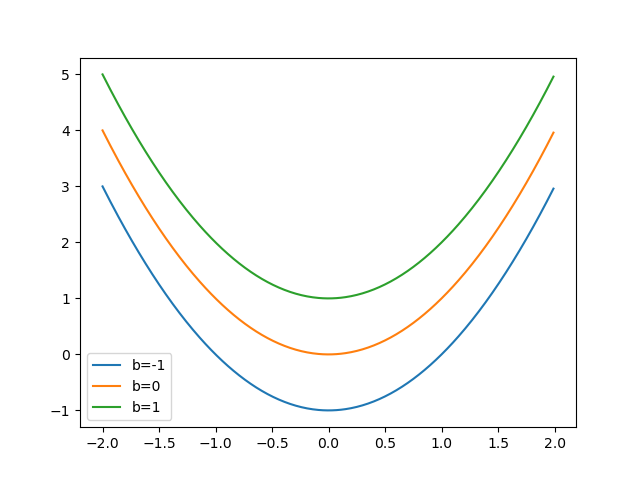

Functions#
Exercise 1: Turn this code into a function#
The code below computes the cumulative sum over the values in a list.
Given a list [1,2,3], the cumulative sum is a new list with these items: [1, 1+2, 1+2+3] = [1, 3, 6].
Turn this code into a function with the following properties:
name: cumsum
argument: a list
returns: the cumulative sum
Document this function with an appropriate docstring.
Test your function by making up a new list and calculating the cumulative sum over its values.
values = [1,2,3,4,3,2,4]
cumsum = []
for idx in range(len(values)):
cumsum.append(sum(values[:idx+1]))
print(cumsum)
# your solution here
[1, 3, 6, 10, 13, 15, 19]
[1, 3, 6, 10, 13, 15, 19]
[1, 0, -2]
Exercise 2: Use a python function to for calculating the values of a mathematical function#
Write a function that computes the value of the following mathematical function: \(f(x,b) = x^2 + b\)
Plot the function \(f\) for 100 x-values covering the range of [-2.0, 2.0] and three different, but constant, values of b = [-1, 0, 1]. This should produce three curves, each with 100 data points.
Annotate the plot with proper labels and a legend that indicates the vale of b.
Roughly like so:

# your solution here
Exercises 4: Organizing code with functions#
For the next block of exercises, we will play with temperature anomaly data - deviations of the global mean temperature. We will first solve the problem without using functions (Exercise 4) and then improve the solution by using functions (Exercise 5).
# EXECUTE BUT DO NOT CHANGE THIS CELL
temperature_anomalies = [-0.19,-0.177,-0.308,-0.289,-0.193,-0.057,0.077,0.026,0.029,0.068,0.256, 0.342, 0.591, 0.792]
print(temperature_anomalies)
[-0.19, -0.177, -0.308, -0.289, -0.193, -0.057, 0.077, 0.026, 0.029, 0.068, 0.256, 0.342, 0.591, 0.792]
For an analysis, we need to z-score the data:
Z-scoring is a common operation in statistics. It involves normalizing the data so that it has zero mean and unit standard deviation (std=1).
This can be done by applying the following two steps to each value in the list:
subtract the mean,
divide by the standard deviation:
In math: \(z = (x - M) / S\) where \(z\) is the z-scored value and \(M\) and \(S\) are mean and standard deviation of the data.
In the followign 4 exercises, we will show you how to approach such a problem using the divide and conquer strategy: We split the big, complicated, seemingly unsolvable problem into simpler sub-problems, that are easy to solve. Each exercise that follows solves on such subproblem.
We will:
Compute the sum over all elements in a list
Compute the mean, by modifying the code from step 1.
Generate a list in which the mean was substracted from each list element
Compute the standard deviation
Generate a list in which each list element is z-scored (mean subtraced, divided by the standard deviation)
Exercise 4.1 - Compute the sum of all anomaly values#
The sum of all list values can be written in sum notation as follows:
\(A = \sum_i^N x_i\)
where:
\(A\) is the sum
\(N\) is the number of elements in the list
\(x_i\) is the i-th element in the list, i can range from 0 to N-1
# your solution here
Exercise 4.2 - Compute the mean of all anomaly values#
The mean is defined as the sum of all values, \(A\), divided by the number of values in the list, \(N\):
\(M = A/N = 1/N \sum_i^N x_i\)
# your solution here
Exercise 4.3 - substract the mean value#
Create a new list, mean_subtracted that holds the mean-subtracted anomaly values. Subtract the mean of the anomaly values from each element in temperature_anomalies such that \(y_i = x_i - M\).
# your solution here
Exercise 4.4 - Compute the standard deviation#
The standard deviation can be computed by:
subtracting the mean from each element of the list
taking the square of each mean-subtracted value
calculating the mean of the squared, mean-subtracted values (this is the variance)
taking the square root of the variance
Or more cryptically:
\(S = \sqrt{1/N \sum_i^N (x_i - M)^2} = \sqrt{1/N \sum_i^N y_i^2}\)
# your solution here
Exercise 4.5 - z-score#
Now create a new list of z-scored anomaly values by re-using the values for mean and standard deviation computed above and applying them to each value in the list:
\(z_i = (x_i - M) / S\)
# your solution here
Exercise 5: Re-organize the code from exercise 4 using functions#
Write four functions:
One that computes the sum of the elements of a list.
One that computes the mean of the elements of a list. Use your
sumcreated in step 1.One that subtracts a specific value from all elements in a list.
One that computes the standard deviation of the elements of a list. Use the
meanfunction computed in step 2.One that zscores the list elements (returns a new list in which each element is z-scored). Re-use the functions created in the previous steps.
In each step, first think about the inputs (arguments) and outputs (return) of each function.
# EXECUTE BUT DO NOT CHANGE THIS CELL
temperature_anomalies = [-0.19,-0.177,-0.308,-0.289,-0.193,-0.057,0.077,0.026,0.029,0.068,0.256, 0.342, 0.591, 0.792]
print(temperature_anomalies)
[-0.19, -0.177, -0.308, -0.289, -0.193, -0.057, 0.077, 0.026, 0.029, 0.068, 0.256, 0.342, 0.591, 0.792]
5.1 Write a function that calculates the sum of all list elements#
# your solution here
5.2 Mean#
# your solution here
5.3. Subtracting the mean#
# your solution here
5.4 Standard deviation#
# your solution here
5.5 Z-score#
# your solution here